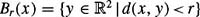

|
| |||||||||||||
|
|
||
Even a simple planner can present interesting and difficult issues. The Bug1 and Bug2 algorithms [301] are among the earliest and simplest sensor-based planners with provable guarantees. These algorithms assume the robot is a point operating in the plane with a contact sensor or a zero range sensor to detect obstacles. When the robot has a finite range (nonzero range) sensor, then the Tangent Bug algorithm [217] is a Bug derivative that can use that sensor information to find shorter paths to the goal. The Bug and Bug-like algorithms are straightforward to implement; moreover, a simple analysis shows that their success is guaranteed, when possible. These algorithms require two behaviors: move on a straight line and follow a boundary. To handle boundary-following, we introduce a curve-tracing technique based on the implicit function theorem at the end of this chapter. This technique is general to following any path, but we focus on following a boundary at a fixed distance.
Perhaps the most straight forward path planning approach is to move toward the goal, unless an obstacle is encountered, in which case, circumnavigate the obstacle until motion toward the goal is once again allowable. Essentially, the Bug1 algorithm formalizes the "common sense" idea of moving toward the goal and going around obstacles. The robot is assumed to be a point with perfect positioning (no positioning error) with a contact sensor that can detect an obstacle boundary if the point robot "touches" it. The robot can also measure the distance d(x, y) between any two points x and y. Finally, assume that the workspace is bounded. Let Br (x) denote a ball of radius r centered on x, i.e., . The fact that the workspace is bounded implies that for all , there exists an r < ∞ such that .
The start and goal are labeled qstart and qgoal, respectively. Let qLO = qstart and the m-line be the line segment that connects qLi to qgoal. Initially, i = 0. The Bug1 algorithm exhibits two behaviors: motion-to-goal and boundary-following. During motion-to-goal, the robot moves along the m-line toward qgoal until it either encounters the goal or an obstacle. If the robot encounters an obstacle, let qH1 be the point where the robot first encounters an obstacle and call this point a hit point. The robot then circumnavigates the obstacle until it returns to qH1. Then, the robot determines the closest point to the goal on the perimeter of the obstacle and traverses to this point. This point is called a leave point and is labeled qL1. From qL1, the robot heads straight toward the goal again, i.e., it reinvokes the motion-to-goal behavior. If the line that connects qL1 and the goal intersects the current obstacle, then there is no path to the goal; note that this intersection would occur immediately "after" leaving qL1.
Otherwise, the index i is incremented and this procedure is then repeated for qLi and qHi until the goal is reached or the planner determines that the robot cannot reach the goal (figures 2.1, 2.2). Finally, if the line to the goal "grazes" an obstacle, the robot need not invoke a boundary following behavior, but rather continues onward toward the goal. See algorithm 1 for a description of the Bug1 approach.
Input: A point robot with a tactile sensor Output: A path to the qgoal or a conclusion no such path exists 1: while Forever do 2: repeat 3: From qLi-1, move toward qgoal. 4: until qgoal is reached or an obstacle is encountered at qHi 5: if Goal is reached then 6: Exit. 7: end if 8: repeat 9: Follow the obstacle boundary. 10: until qgoal is reached or qHi is re-encountered. 11: Determine the point qLi on the perimeter that has the shortest distance to the goal. 12: Go to qLi. 13: if the robot were to move toward the goal then 14: Conclude qgoal is not reachable and exit. 15: end if 16: end while
Like its Bug1 sibling, the Bug2 algorithm exhibits two behaviors: motion-to-goal and boundary-following. During motion-to-goal, the robot moves toward the goal on the m-line; however, in Bug2 the m-line connects qstart and qgoal, and thus remains fixed. The boundary-following behavior is invoked if the robot encounters an obstacle, but this behavior is different from that of Bug1. For Bug2, the robot circumnavigates the obstacle until it reaches a new point on the m-line closer to the goal than the initial point of contact with the obstacle. At this time, the robot proceeds toward the goal, repeating this process if it encounters an object. If the robot re-encounters the original departure point from the m-line, then there is no path to the goal (figures 2.3, 2.4). Let be the current position of the robot, i = 1, and qLO be the start location. See algorithm 2 for a description of the Bug2 approach.
At first glance, it seems that Bug2 is a more effective algorithm than Bug1 because the robot does not have to entirely circumnavigate the obstacles; however, this is not always the case. This can be seen by comparing the lengths of the paths found by the two algorithms. For Bug1, when the ith obstacle is encountered, the robot completely circumnavigates the boundary, and then returns to the leave point. In the worst case, the robot must traverse half the perimeter, pi, of the obstacle to reach this leave point.
Moreover, in the worst case, the robot encounters all n obstacles. If there are no obstacles, the robot must traverse a distance of length d(qstart, qgoal). Thus, we obtain
For Bug2, the path length is a bit more complicated. Suppose that the line through qstart and qgoal intersects the ith obstacle ni times. Then, there are at most ni leave points for this obstacle, since the robot may only leave the obstacle when it returns to a point on this line. It is easy to see that half of these intersection points are not valid leave points because they lie on the "wrong side" of the obstacle, i.e., moving toward the goal would cause a collision. In the worst case, the robot will traverse nearly the entire perimeter of the obstacle for each leave point. Thus, we obtain
Naturally, (2.2) is an upper-bound because the summation is over all of the obstacles as opposed to over the set of obstacles that are encountered by the robot.
Input: A point robot with a tactile sensor
Output: A path to qgoal or a conclusion no such path exists
1: while True do
2: repeat
3: From qLi-1, move toward qgoal along m-line.
4: until
qgoal is reached or
an obstacle is encountered at hit point qHi.
5: Turn left (or right).
6: repeat
7: Follow boundary
8: until
9: qgoal is reached or
10: qHi is re-encountered or
11: m-line is re-encountered at a point m such that
12: m ≠ qHi (robot did not reach the hit point),
13: d(m, qgoal) < d(m, qHi (robot is closer), and
14: If robot moves toward goal, it would not hit the obstacle
15: Let qLi+1 = m
16: Increment i
17: end while
A casual examination of (2.1) and (2.2) shows that LBug2 can be arbitrarily longer than LBug1. This can be achieved by constructing an obstacle whose boundary has many intersections with the m-line. Thus, as the "complexity" of the obstacle increases, it becomes increasingly likely that Bug1 could outperform Bug2 (figure 2.4).
In fact, Bug1 and Bug2 illustrate two basic approaches to search problems. For each obstacle that it encounters, Bug1 performs an exhaustive search to find the optimal leave point. This requires that Bug1 traverse the entire perimeter of the obstacle, buthaving done so, it is certain to have found the optimal leave point. In contrast, Bug2 uses an opportunistic approach. When Bug2 finds a leave point that is better than any it has seen before, it commits to that leave point. Such an algorithm is also called greedy, since it opts for the first promising option that is found. When the obstacles are simple, the greedy approach of Bug2 gives a quick payoff, but when the obstacles are complex, the more conservative approach of Bug1 often yields better performance.
|
|
||
|